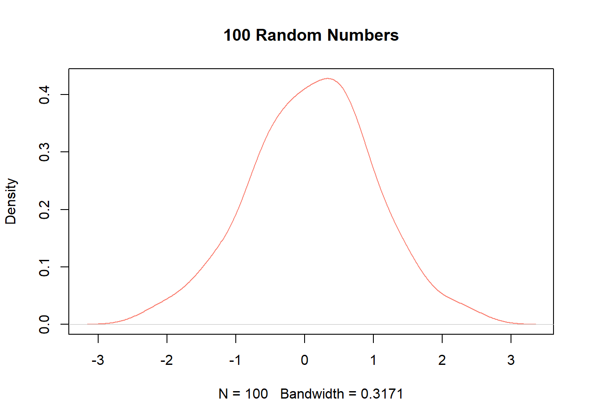

10 Graphing
The following subsections show examples of how to create certain types of graphs.
10.1 Histograms and Density Plots
All we need to make a histogram is to pass a vector into the hist() function.
To create a density plot, we apply plot() over a vector of class density via the density() function.
# Remember our random numbers.
set.seed(1)
# Create our random numbers.
x <- density(rnorm(100))
# Plot our random numbers.
plot(x,
main = '100 Random Numbers',
col = 'salmon')
To overlay a density plot on a histogram, we use hist(..., freq = FALSE) followed by lines() on our density vector.
hist(mtcars$mpg,
col = 'salmon',
xlab = 'MPG',
ylab = 'Density',
main = 'MPG Distribution',
freq = FALSE) # Use density on y-axis.
lines(density(mtcars$mpg),
lwd = 1) # Line width
10.2 Scatter Plots
To make a scatter plot, we make use of the plot(formula) function, where formula input is of the syntax y ~ x (y relates to the y-axis and relates to the x-axis).
10.2.1 Simple Scatter Plot
10.2.2 Multiple Scatter Plots
For a more complex example, let’s make multiple scatter plots via a for loop.
# Set up a 2x2 canvas
par(mfrow = c(2,2))
# Set parameters
unique_gears <- sort(unique(mtcars$gear))
mycolors <- c('cyan4', 'salmon','forestgreen', 'purple')
# Begin plot loop
for (i in seq_along(unique_gears)) {
# Subset by number of gears
ss <- subset(mtcars, gear == unique_gears[i])
# Plot a scatter points
with(ss,
plot(mpg ~ wt,
col = mycolors[i],
ylab = 'MPG',
xlab = 'Weight',
main = paste0('MPG vs. Weight (No. of Gears = ',
unique_gears[i],
')')))
# Generate a trendline for each subset.
abline(lm(mpg ~ wt, ss))
}
Notice how “purple” isn’t used in graphs, as there are only three sub-graphs to plot
10.2.3 Text Plot
To make a text plot, we just turn off the points in the plot() function via type = 'n' and then use the text() function to label them on the graph.
# Set up basic plot.
with(mtcars, plot(wt ~ mpg, pch = 1, type = 'n',
xlab = 'MPG',
ylab = 'Weight',
main = 'Weight vs. MPG'))
# Plot the labels on the graph.
with(mtcars, text(mpg, # x coordinate for words
wt, # y coordinate for words
row.names(mtcars), # Words to use.
pos = 3,
cex = 0.0,
col = 'cyan4'))
# Add some mean lines for flair.
abline(h = mean(mtcars$wt), v = mean(mtcars$mpg),
lty = 2)10.3 Line Plots
Making a line plot is similar to making a scatter plot except that we set type = 'l' as an additional input.
10.4 Box Plots
Constructing a box plot with the boxplot() function is similar to making a scatter plot with plot(): we pass a formula of vectors into it.
10.5 Bar Plots
For a bar plot, we pass a vector (usually one of counts) or aggregation to barplot().
10.5.1 Frequency Chart
For a frequency chart, we have to calculate a table of frequencies with the table() function before passing it to barplot().
10.5.2 Grouped Mean Comparisons
For grouped mean comparisons, we have to aggregate data with aggregate() (see the Functionals chapter for more details) before passing it to barplot().
10.6 Summary
| Function | Description | Example |
|---|---|---|
| hist(x) | Histogram | hist(mtcars$mpg) |
| plot(density(x)) | Density plot | plot(density(rnorm(100))) |
| plot(y ~ x) | Scatter plot | with(mtcars, plot(mpg ~ wt)) |
| plot(y ~ x, type = ‘l’) | Line plot | with(Orange, plot(circumference ~ age, type = ‘l’)) |
| boxplot(y ~ x) | Box plot | with(mtcars, boxplot(mpg ~ wt)) |
| barplot(x) | Bar plot | barplot(table(mtcars$gear)) |